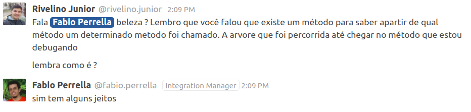

Showoff Menu
Close
Press ? for help.
All features are anonymous.
Press ? for help.
All features are anonymous.
$ cat ~/.pryrc
Pry.commands.alias_command 'c', 'continue'
Pry.commands.alias_command 's', 'step'
Pry.commands.alias_command 'n', 'next'
Pry.commands.alias_command 'f', 'finish'
Pry.commands.alias_command 'w', 'whereami'
Pry.commands.alias_command 'bt', 'backtrace'
Pry.config.editor = "vim"Understand why the show "Vai Anita" is recommended to everybody!?!?!
https://github.com/fabioperrella/fake-netflix-recommendations
Warning: This is a crazy app, just to show some debugging scenarios!
step(in) commandUserRecommendations.list
├── UserRecommendations#list
│ ├── fetchers
│ ├── sort_by
│ │ ├── ItemsFetcher::Main.order
│ │ ├── ItemsFetcher::Secondary.order
│ │ ├── ItemsFetcher::Sponsored.order
│ ├── map
│ │ ├── ItemsFetcher::Main.fetch
│ │ │ ├── ItemsFetcher::Main#fetch
│ │ │ │ ├── ItemsFetcher::Main#main_preferences
│ │ ├── ItemsFetcher::Secondary.fetch
│ │ │ ├── ItemsFetcher::Secondary#fetch
│ │ │ │ ├── ItemsFetcher::Secondary#secondary_preferences
│ │ ├── ItemsFetcher::Sponsored.fetch
│ │ │ ├── ItemsFetcher::Sponsored#fetch
│ │ │ │ ├── ItemsFetcher::Sponsored#fetch
│ │ │ │ │ ├── each
│ │ │ │ │ │ ├── SponsoredMetrics.new
│ │ │ │ │ │ │ ├── SponsoredMetrics#save
│ │ │ │ │ │ │ │ ├── SponsoredMetrics#key
│ │ │ │ │ │ │ │ ├── SponsoredMetrics#value
│ │ │ │ │ │ │ │ ├── Metrics.save
│ │ │ │ │ │ │ │ │ ├── Rails.cache.save
│ ├── inject
│ ├── reject
│ │ ├── UserRecommendations#watched_itemsBuild a gem to build this tree automatically!
I used the gem tty-tree to build it manually
require 'tty-tree'
tree = TTY::Tree.new do
node 'UserRecommendations.list' do
node 'UserRecommendations#list' do
node 'fetchers'
node 'sort_by' do
node 'ItemsFetcher::Main.order' do
end
node 'ItemsFetcher::Secondary.order' do
end
node 'ItemsFetcher::Sponsored.order' do
end
end
...binding.pry in NETFLIX/app/services/user_recommendations.rb:3
spec/services/user_recommendations_spec.rb:49
step to deep downnext to execute the line and go to the next
step-back command :(finish to run the current frame until the endup and down to know where in the stack I am, and inspect some variablenext to execute the line and go to the next linebacktrace and frame to show the current framewhereami to show where the debugger is
Using up, down and frame to understand what happened before it gets in
the breakpoint.
# PM/lib/recipes_manager/client.rb:16
class Client
def post_bundle(bundle)
binding.pry
response = http.post('bundles', bundle.as_json)
return response.body if response.success?
# ....
end
endplay command to run linesGood code (to play):
fetchers
.sort_by(&:order)
.map{ |fetcher| fetcher.fetch(user) }
.inject(:+)
.reject { |item| watched_items.include?(item) }
# play -l 1..2
# play -l 1..3
# play -l 1..4Bad code (to play):
fetchers.sort_by(&:order).map{ |fetcher| fetcher.fetch(user) }.inject(:+).reject { |item| watched_items.include?(item) }
# play -l 1 :(# app/services/item_remover.rb
def remove(item)
binding.pry
ActiveRecord::Base.transaction do
UserItemLog.where(item: item).destroy_all
item.destroy
end
endstep to go into the blockbreak [LINE] and continue for the win!# app/services/create_preference.rb
def create(name, items)
binding.pry
ActiveRecord::Base.transaction do
items.each do |item|
item.preferences << name
item.user_item_logs.each do |item_log|
user = item_log.user
unless user.preferences.include?(name)
user.preferences << name
user.save!
end
end
item.save!
end
end
endbreak 10 if user.id == x to not stop in each elementbreak to list breakpointsbreak --delete x to delete a breakpointbinding.pry and run all tests...edit -c to edit the current file (Pry.config.editor must be configured)binding.pry
pry stuff...pry to browse source code regardless of a debug sessionpry tools are available (with pry-byebug), but when
only in pry console, the debug commands are not availablerails c to enter the consolecd to inspect a class or instancenesting to show where I amls to show the methods and variablesls --grep XX to filter the result of ls
show-source (or $) to show the current sourceshow-source to show the source of some methodUse show-doc do show the docs (requires gem pry-doc):
[2] pry> show-doc Array#all?
From: enum.c (C Method):
Owner: Enumerable
Visibility: public
Signature: all?(*arg1)
Number of lines: 16
Passes each element of the collection to the given block. The method
returns true if the block never returns
false or nil. If the block is not given,
Ruby adds an implicit block of { |obj| obj } which will
cause #all? to return true when none of the collection members are
false or nil.
If instead a pattern is supplied, the method returns whether
pattern === element for every collection member.
%w[ant bear cat].all? { |word| word.length >= 3 } #=> true
%w[ant bear cat].all? { |word| word.length >= 4 } #=> false
%w[ant bear cat].all?(/t/) #=> false
[1, 2i, 3.14].all?(Numeric) #=> true
[nil, true, 99].all? #=> false
[].all? #=> trueWithout ; in the end
[11] pry(main)> conn = ActiveRecord::Base.connection
=> #<ActiveRecord::ConnectionAdapters::SQLite3Adapter:0x000055e01c45ee60
@active=true,
@config={:adapter=>"sqlite3", :pool=>5, :timeout=>5000, :database=>"/home/fabio/workspace/fake-netflix-recommendations/db/development.sqlite3"},
@connection=
#<SQLite3::Database:0x000055e01c45f0b8
@authorizer=nil,
@busy_handler=nil,
@collations={},
@encoding=#<Encoding:UTF-8>,
#...With ; in the end
[12] pry(main)> conn = ActiveRecord::Base.connection;
[13] pry(main)> conn.class
=> ActiveRecord::ConnectionAdapters::SQLite3Adapter_ex_
[1] pry> 1/0
ZeroDivisionError: divided by 0
from (pry):1:in `/`
[2] pry> _ex_
=> #<ZeroDivisionError: divided by 0>And it is possible to find where it was raised with cat --ex:
[3] pry> cat --ex
Exception: ZeroDivisionError: divided by 0
--
From: (pry) @ line 5 @ level: 0 of backtrace (of 82).
1: 1/0
2: _ex_
3: Item.new
4: aa = _
=> 5: 1/0
6: _ex__
[1] pry> Item.new
=> #<Item:0x00005578e8d1dba0 id: nil, name: nil, #...
[2] pry> item = _
=> #<Item:0x00005578e8d1dba0 id: nil, name: nil, #...Given the code below
pry(main)> def do_something
pry(main)* if x == 1
pry(main)* puts 'sim'
pry(main)* elseedit to edit the input buffershow-input to showedit to edit! to clearUse . (dot) and a command, example:
pry> .ruby -v
ruby 2.5.3p105 (2018-10-18 revision 65156) [x86_64-linux]
pry> .pwd
/home/fabio/workspace/fake-netflix-recommendationsctrl+c, it always CRASHES THE TERMINAL !!
reset to restore the terminalexit, it exits only the current contextexit!, it exists the console, no matter where you areThe source of this presentation: https://github.com/fabioperrella/debugging-with-mastery
This presentation was made with the gem Showoff: https://github.com/puppetlabs/showoff
How to find a subject to do a presentation: http://www.greaterthancode.com/2016/11/21/008-sandi-metz-and-katrina-owen/
https://github.com/fabioperrella
http://twitter.com/fabioperrella